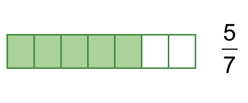
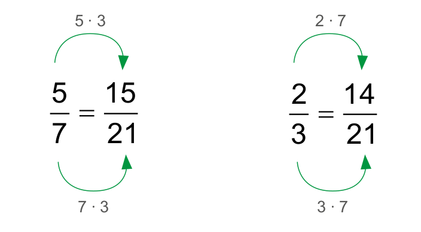
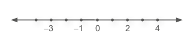
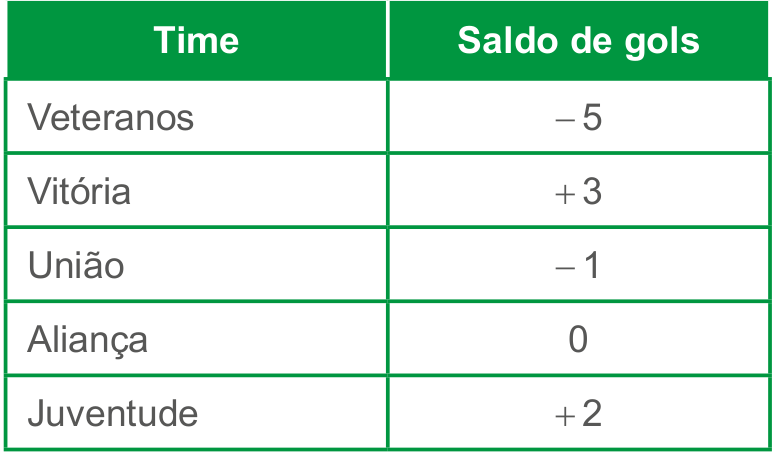
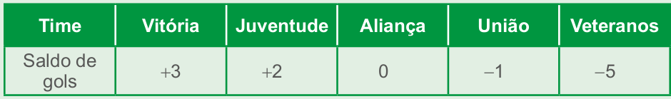
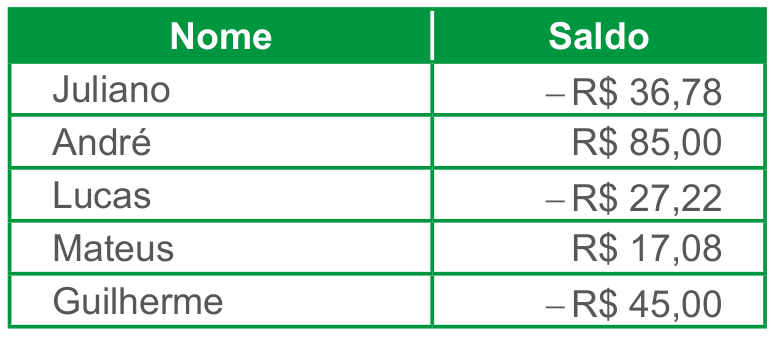

| Principais habilidades da BNCC | EF07MA08, EF07MA10 |
| Competências | CE6, CE8, CG9 |
A comparação de números foi iniciada no volume do 6.º ano, sendo agora ampliada com o estudo dos números negativos. Para comparar números naturais, inteiros e racionais, os alunos podem localizá-los na reta numérica, observando que o maior será aquele que estiver mais à direita.
No caso do conjunto dos racionais, é importante que os alunos percebam que para comparar dois números fracionários uma das formas é encontrar frações equivalentes às frações dadas que apresentem o mesmo denominador. O maior número fracionário será aquele que tiver o maior numerador.
CAPÍTULO 2 - Comparando números
Em um dia qualquer do mês de fevereiro, três cidades marcavam as seguintes temperaturas:
1. Troque ideias com um colega e expliquem, em seus cadernos, como podemos verificar em qual das cidades a temperatura é a mais baixa e em qual delas a temperatura é a mais alta. A temperatura mais alta é a de São Paulo e a mais baixa é a de Nova Iorque.

Vejamos outras situações.
Situação 1
Juliano e Carla moram no mesmo prédio e a distância de suas casas até o trabalho é a mesma para os dois. Certo dia, os dois saíram de carro no mesmo horário. Meia hora depois, Juliano já havia percorrido \(\frac{5}{7}\) do seu trajeto e Carla \(\frac{2}{3}\) Quem estava mais próximo do trabalho?
Por meio de desenhos vamos representar o trajeto percorrido pelos dois até aquele momento:

Comparando os desenhos, temos que \(\frac{5}{7}\) > \(\frac{2}{3}\)
27
UNIDADE 1 - CAPÍTULO 2
Situação 2
Retome, com os alunos, a unidade de medida de temperatura em grau Celsius e questione se lembram até qual número um termômetro usual mede, se possuem um em casa e se já utilizaram. Comente também que há termômetros digitais e de mercúrio, para auxiliar no controle da temperatura corporal.
Desenhe uma reta numerada vertical e explore os valores negativos e positivos apresentados. Dessa forma, estarão explorando a localização de números inteiros positivos e negativos na reta numerada de forma intuitiva.
Solicite aos alunos uma pesquisa sobre as variações das medidas de temperatura em diferentes regiões do país, promovendo uma atividade interdisciplinar com Geografia ou Ciências.
Também podemos comparar os números fracionários, encontrando frações equivalentes às frações dadas e que tenham o mesmo denominador. Assim, a fração que tiver o maior numerador, representará a maior fração.
Neste momento, quem estava mais próximo do trabalho, ou seja, já havia percorrido a maior distância, era Juliano.
Siutação 2
Observe as temperaturas registradas nos termômetros abaixo.
Qual é a maior e a menor temperatura registrada por esses termômetros?
Representando os números que indicam as temperaturas na reta numérica, temos:
Desse modo, observamos que:
-3 < -1 < 0 < 2 < 4
A maior temperatura registrada é 4°C e a menor - 3°C.
Quando comparamos dois números quaisquer, o maior é aquele que está mais à direita na reta numérica.
28
UNIDADE 1 - CAPÍTULO 2
Atividade 5
Vamos encontrar frações equivalentes às frações dadas que apresentem o mesmo denominador \(\frac{3}{4} = \frac{6}{8}\). Comparando as frações, temos que o tubo com o maior diâmetro é o de \(\frac{3}{4}\) de polegada.
ENCONTRE SOLUÇÕES
1. Identifique se as afirmações são verdadeiras ou falsas. Justifique no caderno a sua resposta.
a) -5 > -3 Falsa. −5 < −3, pois −5 está à esquerda de −3 na reta numérica.
b) -\(\frac{2}{3}\) > -\(\frac{5}{3}\) Verdadeira, pois \(\color{magenta} -\frac{2}{3}\) está à direita de \(\color{magenta} -\frac{3}{5}\) na reta numérica.
c) + 7 < + 10 Verdadeira, pois +10 está à direita de +7 na reta numérica.
d) 9,04 < 8,5 Falsa. 9,04 > 8,5, pois 9,04 está à direita de 8,5 na reta numérica.
e) 0 < - 1 Falsa. 0 > −1, pois 0 está à direita de −1 na reta numérica.
f) + 2 > - 2 Verdadeira, pois +2 está à direita de −2 na reta numérica.
2. Os times que participaram do campeonato de futebol de salão, do Clube Social, terminaram com os seguintes saldos de gols:
Sabendo que saldo de gols é a diferença entre os gols marcados e os gols sofridos por um time, determine o que se pede.
a) Entre Veteranos e Juventude, qual time obteve o menor saldo de gols? Veteranos.
b) Entre Aliança e União, qual time obteve o maior saldo de gols? Aliança.
c) Entre Veteranos e União, qual time obteve o menor saldo de gols? Veteranos.
d) Entre Veteranos e Vitória, qual time obteve o maior saldo de gols? Vitória.
e) Entre Aliança e Juventude, qual time obteve o maior saldo de gols? Juventude.
f) Em uma tabela, registre o nome dos times em relação aos saldos de gols em ordem decrescente.
3. Escreva, em ordem crescente, os números inteiros que são maiores que - 4 e menores que 5. −3, −2, −1, 0, 1, 2, 3, 4
4. Durante determinada madrugada, foi registrada na cidade A, a temperatura mínima de - 3,5ºC e, na cidade B a temperatura mínima de - 8,2ºC. Em qual cidade foi registrada a temperatura mais baixa? Na cidade B.
5. Alguns tubos de PVC são vendidos de acordo com a medida de seu diâmetro. Márcio comprou alguns tubos que medem \(\frac{5}{8}\) de polegada e outros \(\frac{3}{4}\). Qual deles apresenta o maior diâmetro?
Encontre soluções
Atividade 2
29
UNIDADE 1 - CAPÍTULO 2
Atividade 7
Para o jogo, batalha dos números, os alunos deverão reproduzir as cartas que se encontram nos anexos do livro. Durante o jogo, os alunos deverão perceber que algumas cartas representam o mesmo número, como \(\frac{10}{5} = 5\), \(-\frac{12}{3} = 4\), \(-\frac{1}{2} = -0,5\), \(\frac{1}{4} = 0,25\), entre outros. O objetivo é que os alunos sejam capazes de realizar essas comparações mentalmente. Caso, inicialmente, eles não consigam fazê-las, poderão utilizar uma reta numérica como suporte, localizando os números que aparecem na rodada.
Observe que o uso de jogos no ensino da Matemática auxilia no desenvolvimento das habilidades e competências de sociabilidade e socioemocionais.
EF07MA01
6. Observe no quadro, a seguir, os saldos das contas bancárias de cinco amigos.
a) Dentre os cinco amigos, quais apresentam um saldo positivo na conta bancária? André e Mateus.
b) Quais estão com o saldo negativo? Juliano, Lucas e Guilherme.
c) Quem possui o maior saldo? André.
d) Quem está com o menor saldo? Guilherme.
e) Escreva os saldos bancários apresentados no quadro em ordem crescente. −R$ 45,00, −R$ 36,78, −R$ 27,22, R$ 17,08, R$ 85,00

7. Batalha dos números.
- Para este jogo, reproduza as cartas que se encontram nos anexos.
- Em dupla, embaralhem as cartas e distribuam-nas entre vocês, formando dois montes com as cartas viradas para baixo. Elas não podem ser vistas.
- Cada um de vocês vira a carta que está por cima de sua pilha. A de maior valor ganha a rodada.
- As cartas ganhas são colocadas embaixo da pilha. Quando vocês dois virarem cartas de mesmo valor, a “batalha” começa.
- Com as cartas que possuem o mesmo valor sobre a mesa, cada um de vocês vira novamente uma carta. A que tiver o maior valor ganha todas que estão sobre a mesa.
- Repete-se o processo até que um de vocês ganhe todas as cartas. Este será o vencedor.
30
UNIDADE 1 - CAPÍTULO 2